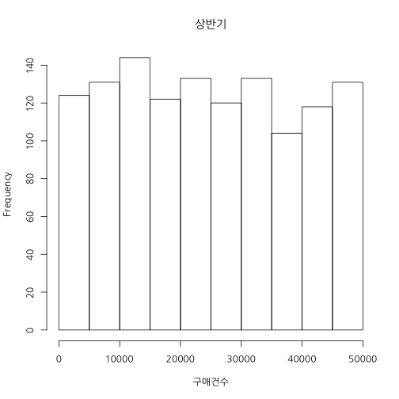
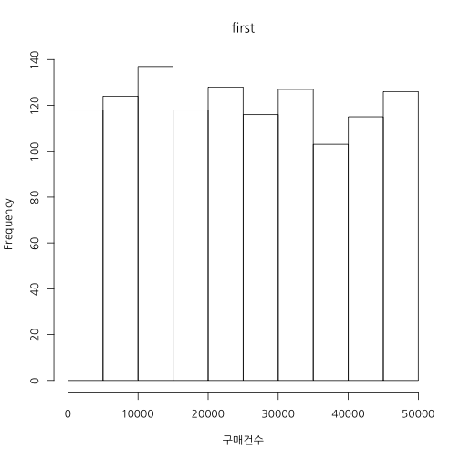
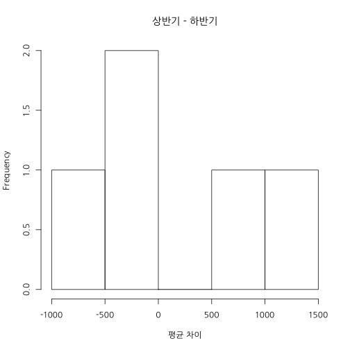
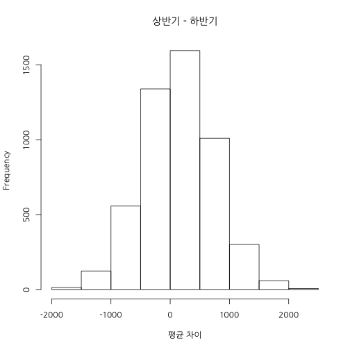

학습 목표
데이터 편집하기
집단 평균 비교하기
상관관계 이해하기
김형준
Analytic Director / (주) 퀀트랩 / kim@mindscale.kr
데이터 편집하기
집단 평균 비교하기
상관관계 이해하기
table(df$성별)
##
## 남 여
## 1260 1260
table(df$요일)
##
## 금 목 수 월 일 토 화
## 360 360 360 360 360 360 360
table(df$점포)
##
## a b c d e f g h i j k l m n o
## 168 168 168 168 168 168 168 168 168 168 168 168 168 168 168
df.first <- subset(df, 매출월 <= 6 )
mean(df.first$구매건수)
## [1] 24601.29
df.latter <- subset(df, 매출월 > 6 )
mean(df.latter$구매건수)
## [1] 24504.51
hist(df.first$구매건수, xlab = "구매건수", main = "상반기")

hist(df.latter$구매건수, xlab = "구매건수", main = "하반기")

var.test(df.first$구매건수, df.latter$구매건수)
##
## F test to compare two variances
##
## data: df.first$구매건수 and df.latter$구매건수
## F = 0.9587, num df = 1259, denom df = 1259, p-value = 0.4544
## alternative hypothesis: true ratio of variances is not equal to 1
## 95 percent confidence interval:
## 0.8583827 1.0707352
## sample estimates:
## ratio of variances
## 0.9586973
t.test(df.first$구매건수, df.latter$구매건수)
##
## Welch Two Sample t-test
##
## data: df.first$구매건수 and df.latter$구매건수
## t = 0.1667, df = 2516.881, p-value = 0.8676
## alternative hypothesis: true difference in means is not equal to 0
## 95 percent confidence interval:
## -1041.646 1235.202
## sample estimates:
## mean of x mean of y
## 24601.29 24504.51
df.high <- df[df$구매건수 >= quantile(df$구매건수, probs = .9), ]
mosaicplot(df.high$성별 ~ df.high$요일,
main="성별 by 요일", shade=F,
color = 1:7, xlab="성별", ylab="요일")

mosaicplot(df.high$성별 ~ factor(df.high$요일, levels=c("월", "화", "수", "목", "금", "토", "일")),
main="성별 by 요일", shade=F,
color = 1:7, xlab="성별", ylab="요일")

df.sunday <- subset(df, 요일 == "일")
var.test(구매건수 ~ 성별, df.sunday)
##
## F test to compare two variances
##
## data: 구매건수 by 성별
## F = 0.8625, num df = 179, denom df = 179, p-value = 0.3235
## alternative hypothesis: true ratio of variances is not equal to 1
## 95 percent confidence interval:
## 0.6428782 1.1572527
## sample estimates:
## ratio of variances
## 0.8625384
t.test(구매건수 ~ 성별, df.sunday)
##
## Welch Two Sample t-test
##
## data: 구매건수 by 성별
## t = -1.1008, df = 356.061, p-value = 0.2717
## alternative hypothesis: true difference in means is not equal to 0
## 95 percent confidence interval:
## -4741.009 1338.175
## sample estimates:
## mean in group 남 mean in group 여
## 23427.77 25129.18
df.month <- sapply(split(df, df$점포), function(x) x$구매건수)
cor(df.month)
## a b c d e
## a 1.00000000 0.130843755 0.04879347 0.122540189 0.1327923809
## b 0.13084376 1.000000000 0.00529570 -0.007498712 -0.0283961293
## c 0.04879347 0.005295700 1.00000000 -0.160043769 -0.0629904389
## d 0.12254019 -0.007498712 -0.16004377 1.000000000 -0.0313532391
## e 0.13279238 -0.028396129 -0.06299044 -0.031353239 1.0000000000
## f 0.02643987 0.034119323 -0.11184458 -0.065122105 -0.0253694913
## g -0.05987799 -0.085808903 0.06350086 -0.154859382 0.0566375316
## h 0.13477354 0.084180509 -0.05481482 0.014657173 0.0135701833
## i 0.09244547 -0.098899192 -0.02623054 -0.055809444 0.0067450405
## j -0.01002922 -0.147510062 0.11603527 -0.125502305 0.0343426866
## k -0.05496454 0.107035081 -0.14646322 -0.061014264 -0.0214708435
## l -0.09318018 -0.124130688 0.03038019 0.091659445 0.0781771063
## m -0.13250538 0.035001181 0.04052505 -0.046362898 -0.1495778363
## n -0.05342016 -0.070236458 0.10087390 -0.037856610 0.0203072901
## o 0.01241294 0.042879575 -0.01847961 0.120932779 -0.0001169395
## f g h i j
## a 0.02643987 -0.05987799 0.1347735401 0.092445465 -0.010029222
## b 0.03411932 -0.08580890 0.0841805091 -0.098899192 -0.147510062
## c -0.11184458 0.06350086 -0.0548148234 -0.026230542 0.116035275
## d -0.06512210 -0.15485938 0.0146571725 -0.055809444 -0.125502305
## e -0.02536949 0.05663753 0.0135701833 0.006745041 0.034342687
## f 1.00000000 -0.09957918 0.0721297386 0.079627691 -0.068807845
## g -0.09957918 1.00000000 0.0431935204 0.122277158 0.080706972
## h 0.07212974 0.04319352 1.0000000000 -0.039309341 -0.062550000
## i 0.07962769 0.12227716 -0.0393093411 1.000000000 0.115292978
## j -0.06880785 0.08070697 -0.0625499997 0.115292978 1.000000000
## k -0.13215009 0.12188159 0.0877813960 0.094424627 0.004223925
## l -0.08917268 -0.05528269 0.0668865329 -0.142569429 0.073622242
## m -0.14923089 0.05482959 -0.0079013267 0.039101438 -0.085075258
## n 0.03040901 -0.00700259 -0.0009610838 -0.026965143 -0.087625002
## o 0.03009380 -0.17558988 -0.0068483368 -0.033111473 0.122658820
## k l m n o
## a -0.054964542 -0.09318018 -0.132505381 -0.0534201563 0.0124129440
## b 0.107035081 -0.12413069 0.035001181 -0.0702364580 0.0428795746
## c -0.146463225 0.03038019 0.040525051 0.1008739041 -0.0184796074
## d -0.061014264 0.09165945 -0.046362898 -0.0378566098 0.1209327790
## e -0.021470844 0.07817711 -0.149577836 0.0203072901 -0.0001169395
## f -0.132150090 -0.08917268 -0.149230890 0.0304090098 0.0300937951
## g 0.121881587 -0.05528269 0.054829585 -0.0070025905 -0.1755898825
## h 0.087781396 0.06688653 -0.007901327 -0.0009610838 -0.0068483368
## i 0.094424627 -0.14256943 0.039101438 -0.0269651433 -0.0331114726
## j 0.004223925 0.07362224 -0.085075258 -0.0876250020 0.1226588199
## k 1.000000000 0.07956276 -0.009135779 0.0570571331 -0.0027892379
## l 0.079562759 1.00000000 -0.092143042 0.0726439547 0.0550998154
## m -0.009135779 -0.09214304 1.000000000 -0.1146238522 -0.1036868042
## n 0.057057133 0.07264395 -0.114623852 1.0000000000 0.0913112332
## o -0.002789238 0.05509982 -0.103686804 0.0913112332 1.0000000000